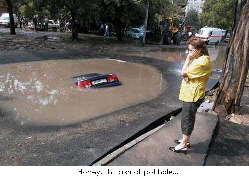

Problem D: You want what filled?

Now that Ryan and Larry infuriated the bear, they're now forced to do menial tasks for food, one such task is filling
in potholes on this deserted island. But of course, it's never quite that easy, as the bear forces them to fill in
the biggest hole first. Since Ryan and Larry are still lazy (very little has changed, you see), can you tell them the order
to fill in the holes?
Input
The first line will contain two numbers x and y, followed by x lines of y characters each. (x and y are
less than 50).
The holes will be represented by the uppercase characters A to Z, and regular land will be represented by ".". There will be
no other characters in the map. Input will be terminated by having 0 0 as input.
Output
For each map, output the problem number (as shown below), then output the hole represented by the character, and the number
of space the hole takes up, sorted by the size of the hole, break ties by sorting the characters in alphabetical order, as shown
in the sample output on a separate line as shown below:
Sample Input
5 5
..AAA
E.BBB
..AA.
CC.DD
CC.D.
5 5
..AAA
E.BBB
..AA.
CC.DD
CC.D.
0 0
Sample Output
Problem 1:
C 4
A 3
B 3
D 3
A 2
E 1
Problem 2:
C 4
A 3
B 3
D 3
A 2
E 1